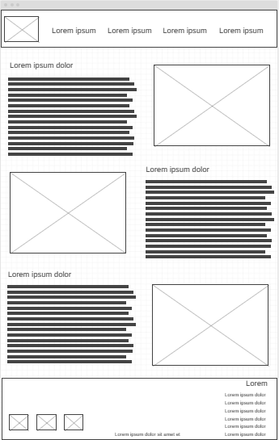

If you are curious and wondering more about my job, here you can find and dive in some of the Projects I have worked into, and get to know more about what I do, different styles of pages designs, and maybe even stole some ideas for your own project where we can work together. In the images below, you can see some of my jobs: In the first one, a complete website which was created from scratch and that contain many and diverse information. Certainly, the page will be adapt to the requirements from each customer.

Also, in the following image it is possible to see how the design itself of the page is made. This is the wireframe of the page is as layout of the website. With my experience and knowledge, I can help you to achieve that what you want
